|
类型 |
轴指令 |
|
描述 |
总线硬件位置比较输出，也支持脉冲轴，必须使用特定的输出口。
4系列产品部分有4个比较输出口，可以选择不同的比较输出口，一般为OUT0/1/2/3口。 比较主轴带编码器输入时，自动使用编码器位置来触发，可以使用MOVEOP_DELAY参数来调整输出准确时刻。 不同的总线驱动器效果可能有差异，也可以通过MOVEOP_DELAY参数来调整。
HW_PSWITCH2与MOVE_OP精准使用同样的硬件资源，不建议在同一个通道同时使用，可以在不同的通道同时使用。 每个系统周期内只能比较一次，系统周期通过SERVO_PERIOD查询。 TABLE位置数据在所有比较点完成前不要修改。 脉冲轴和总线轴均支持此指令。 总线轴比较反馈位置(MPOS) 使用脉冲型电机时只有ATYPE为4时才是比较反馈位置(MPOS)，默认出厂的ATYPE为1或7比较的是命令位置(DPOS)。 |
|
语法 |
命令语法：HW_PSWITCH2(mode, [...]) 函数语法：Buff = HW_PSWITCH2([axisnum])
Mode=1：单轴比较 HW_PSWITCH2(1,opnum,opstate,tablestart,tableend[,direction]) mode：1-启动比较器 opnum：对应的输出口 opstate：第一个比较点的输出状态 tablestart：第一个比较点绝对坐标所在TABLE编号 tableend：最后一个比较点绝对坐标所在TABLE编号 direction：第一个点判断方向，0坐标负向，1坐标正向，-1不使用方向 说明：比较点写在TABLE中，每到达一个比较位置OP反转一次。 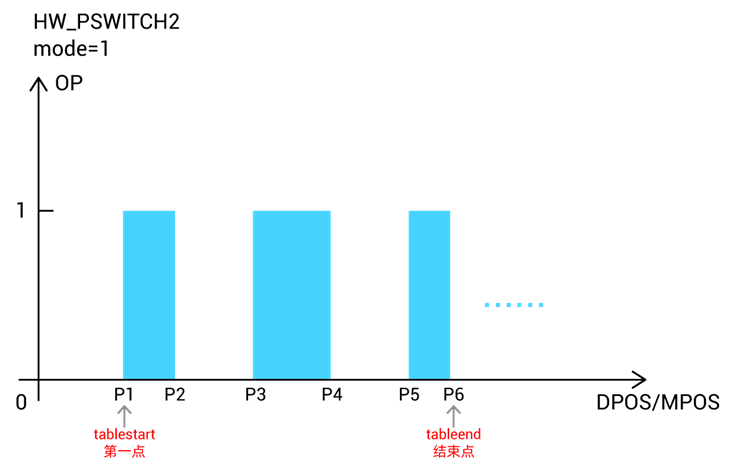
Mode=2：清除比较点 HW_PSWITCH2(2) mode：2-停止并删除没完成的比较点 说明：HW_PSWITCH2没有比较完所有点的话，一定要设置mode值为2，通过HW_PSWITCH2(2)指令停止并删除没有完成的比较点，否则后面此输出通道会工作不正常。
使用矢量距离比较时，与VECTOR_MOVED进行比较，建议连续运动前设置VECTOR_MOVED初始值。
Mode=3：矢量比较方式 HW_PSWITCH2(3, opnum, opstate, tablestart, tableend) mode：3-启动比较器 opnum：对应的输出口 opstate：第一个比较点的输出状态 tablestart：第一个比较点VECTOR_MOVED坐标所在TABLE编号 tableend：最后一个比较点VECTOR_MOVED坐标所在TABLE编号 说明：比较点写在TABLE中，每到达一个比较矢量位置OP反转一次。 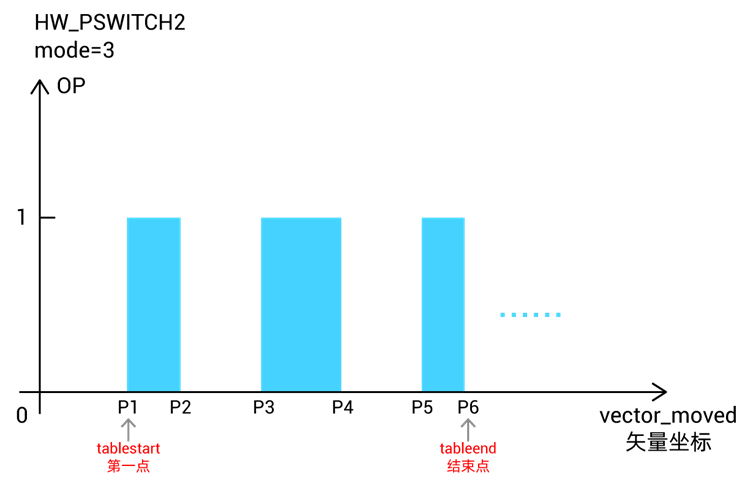
Mode=4：矢量比较方式，单个比较点 HW_PSWITCH2(4, opnum, opstate, vectstart) mode：4-启动比较器 opnum：对应的输出口 opstate：第一个比较点的输出状态 vectstart：比较点VECTOR_MOVED当前运动距离 说明：到达指令设置的一个比较矢量位置OP反转，比较结束。
Mode=5：矢量比较方式，周期脉冲模式 HW_PSWITCH2(5,opnum, opstate, vectstart, repes, cycledis, ondis) mode：5-启动比较器 opnum：对应的输出口 opstate：第一个比较点的输出状态，认为是有效状态，反之认为无效状态 vectstart：比较点VECTOR_MOVED当前运动距离 repes：重复周期，一个周期内比较两次，先输出有效状态，再输出无效状态 cycledis：周期距离，每隔这个距离输出opstate, ondis后还原为无效状态 ondis：输出有效状态的距离，(cycledis- ondis)为无效状态距离 说明：此模式无需TABLE，坐标均参考矢量坐标，从vectstart的位置开始比较，每隔cycledis距离触发一次比较，重复比较的周期为repes，每次触发比较信号后，保持ondis距离后关闭信号，等待下一周期的触发。 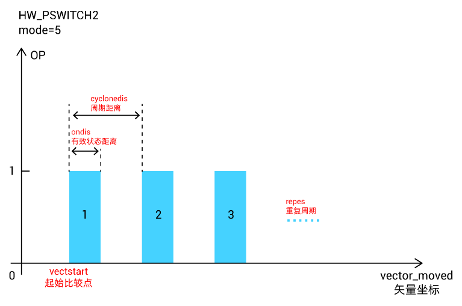
Mode=6：矢量比较方式，周期模式，与HW_TIMER一起使用 HW_PSWITCH2(6, opnum, opstate, vectstart, repes, cycledis) mode：6-启动比较器 opnum：对应的输出口 opstate：第一个比较点的输出状态 vectstart：比较点VECTOR_MOVED当前运动距离 repes：重复周期，一个周期只比较一次 cycledis：周期距离，每隔这个距离输出一次 说明：此模式无需TABLE，坐标均参考矢量坐标，从vectstart的位置开始比较，每隔cycledis距离触发一次比较，重复比较的周期为repes，每次触发比较信号后，保持信号的脉冲宽度由HW_TIMER指令设置，HW_TIMER可以控制到达一个触发点控制OP反转多次，HW_TIMER周期走完等待下一周期的触发。 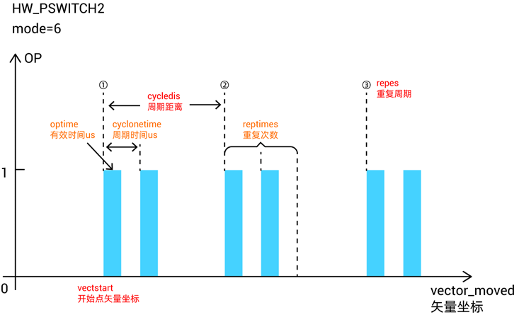
Mode=7：与HW_TIMER一起使用 HW_PSWITCH2(7, opnum, opstate, tablestart, tableend [, optimeus, optimes, cyctimeus]) mode：7-启动比较器，opstate不翻转, 方便与HW_TIMER配合使用. opnum：对应的输出口 opstate：第一个比较点的输出状态 tablestart：第一个比较点VECTOR_MOVED坐标所在TABLE编号 tableend：最后一个比较点VECTOR_MOVED坐标所在TABLE编号 [与hwtimer并用时，可以动态调整hwtimer参数] optimeus：动态调整HW_TIMER的有效时间 optimes：HW_TIMER的重复周期次数 cyctimeus：动态调整HW_TIMER的脉冲周期时间 说明：比较点写在TABLE中，坐标均参考矢量坐标，每到达一个TABLE比较矢量位置触发OP，此时OP的脉冲宽度和每次触发的比较次数由HW_TIMER控制；到达下一个TABLE位置，OP再次触发。 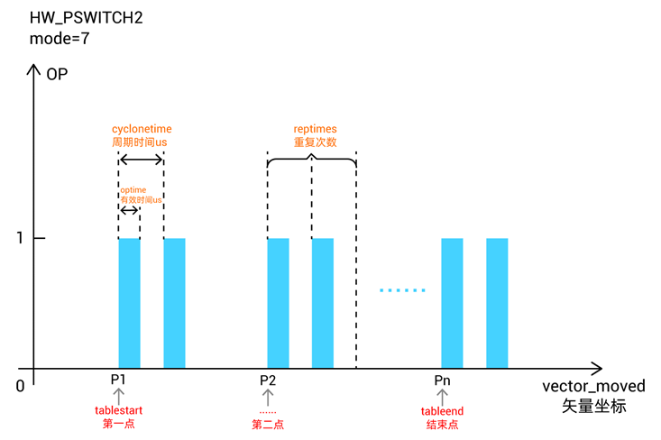
Mode=8：单轴比较，同Mode1，但是不翻转信号 HW_PSWITCH2模式1、8可以和HW_TIMER搭配使用，模式8适配一些需要每个位置触发一定时间的单轴飞拍应用。 指令组合适用范围： HW_PSWITCH2-MODE1与HW_TIMER搭配适用需要间隔一个位置触发一次的情况。 HW_PSWITCH2-MODE8与HW_TIMER搭配适用需要每一个位置触发一次的情况。 脉冲轴和总线轴虚拟轴均适用
以下为2D，3D比较模式 4系列170706以后固件版本支持，运行轨迹必须顺序通过fifo的点。 2D比较：25，26，每2个table存储一个点 3D比较：35，36，每3个table存储一个点 多个点比较，每次输出翻转状态。 HW_PSWITCH2(25, opnum, opstate, maxerr, num, tablepos) HW_PSWITCH2(26, opnum, opstate, maxerr, num, tablepos, [ophwtimeus, ophwtimes, hwcyctimeus]) HW_PSWITCH2(35, opnum, opstate, maxerr, num, tablepos) HW_PSWITCH2(36, opnum, opstate, maxerr, num, tablepos, [ophwtimeus, ophwtimes, hwcyctimeus]) mode：25，26，35，36多维的比较模式 opnum：对应的输出口 opstate：第一个比较点的输出状态 maxerr：比较位置每个轴左右的脉冲个数偏差，进入偏差范围后开始比较 num：table里面存储的比较点个数 tablepos：第一个比较点坐标所在table编号 [与hwtimer并用时，可以动态调整hwtimer参数] ophwtimeus：脉冲时间 ophwtimes：脉冲个数 hwcyctimeus：脉冲周期 注意：此模式下maxerr偏差参数不能写0。
Mode=25：2D比较 HW_PSWITCH2(25, opnum, opstate, maxerr, num, tablepos) 说明：比较点写在TABLE中，两个连续的TABLE数据组成一个2D坐标，每到达一个比较位置OP反转一次。 示意中蓝色段表示OP开启，各类常用插补运动均支持比较，比较点坐标一定的要准确，否则会影响后面点的比较。 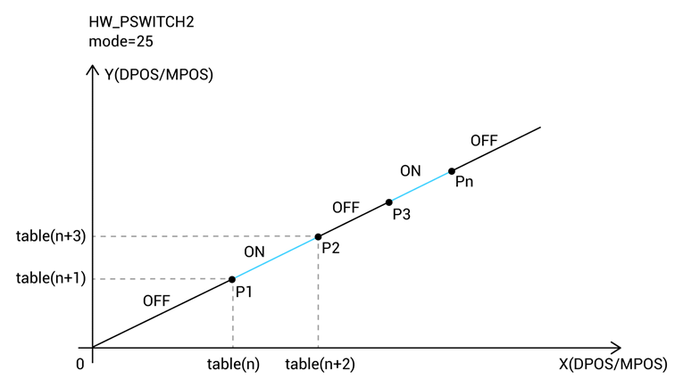
Mode=26：2D比较，与HW_TIMER复用 HW_PSWITCH2(26, opnum, opstate, maxerr, num, tablepos, [ophwtimeus, ophwtimes, hwcyctimeus]) 说明：比较点写在TABLE中，两个连续的TABLE数据组成一个2D坐标，每到达一个比较位置触发OP，每个比较点OP反转的次数和反转周期由HW_TIMER设置；到达下一个TABLE位置，OP再次触发。类似模式7和模式36。 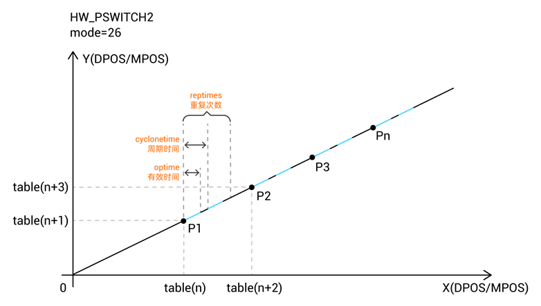
Mode=35：3D比较 HW_PSWITCH2(35, opnum, opstate, maxerr, num, tablepos) 说明：比较点写在TABLE中，三个连续的TABLE数据组成一个3D坐标，每到达一个比较位置OP反转一次。 示意中蓝色段表示OP开启，各类常用插补运动均支持比较，比较点坐标一定的要准确，否则会影响后面点的比较。 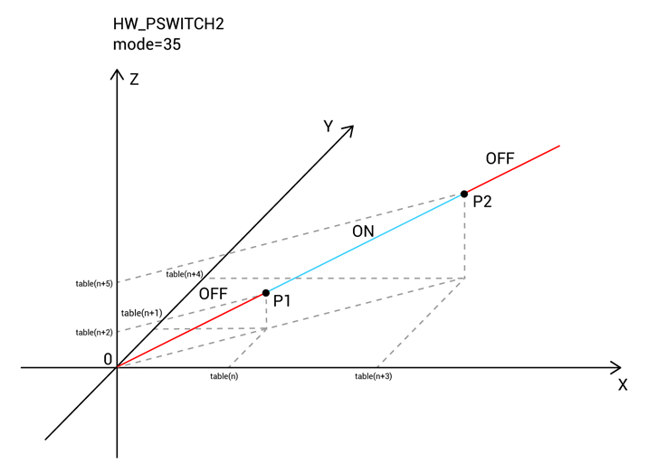
Mode=36：3D比较，与HW_TIMER复用 HW_PSWITCH2(36, opnum, opstate, maxerr, num, tablepos, [ophwtimeus, ophwtimes, hwcyctimeus]) 说明：比较点写在TABLE中，三个连续的TABLE数据组成一个3D坐标，每到达一个比较位置触发OP，每个比较点OP反转的次数和反转周期由HW_TIMER设置；到达下一个TABLE位置，OP再次触发。类似模式26和模式7。 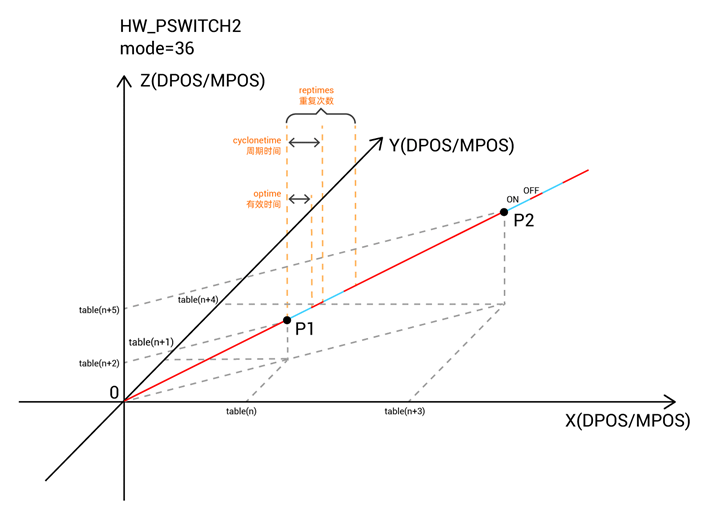 |
|
适用控制器 |
3系列部分、4系列及以上产品，4系列固件20170704及以上 |
|
例子 |
以下例程测试环境：ZMC432，固件版本20190128
例一 mode=1，单轴比较 BASE(0) DPOS=0 MPOS=0 OP(0,OFF) TABLE(0,50,100,150,200) '比较点坐标设置 HW_PSWITCH2(2) '停止并删除没有完成的比较点 HW_PSWITCH2(1, 0, 1, 0, 3,1) '比较4个点，操作输出口0 TRIGGER '触发示波器 MOVE(500)
比较输出图 运动到50时，打开OUT0；位置100时，关闭OUT0；位置150时，打开OUT0；位置200时，关闭OUT0。 MPOS(0)垂直刻度200 OP(0)垂直刻度2 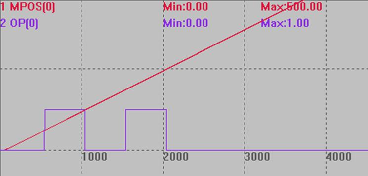
例二 mode=3，矢量单轴比较模式 BASE(0) DPOS=0 MPOS=0 OP(0,OFF) TABLE(0,50,100,150,200) '比较点坐标设置 VECTOR_MOVED=120 '设置矢量起始位置，会影响比较点 HW_PSWITCH2(2) '停止并删除没有完成的比较点 HW_PSWITCH2(3, 0, 1, 0, 3) '比较4个点，操作输出口0 TRIGGER '触发示波器 MOVE(300)
比较输出图 MPOS(0)垂直刻度200 OP(0)垂直刻度2 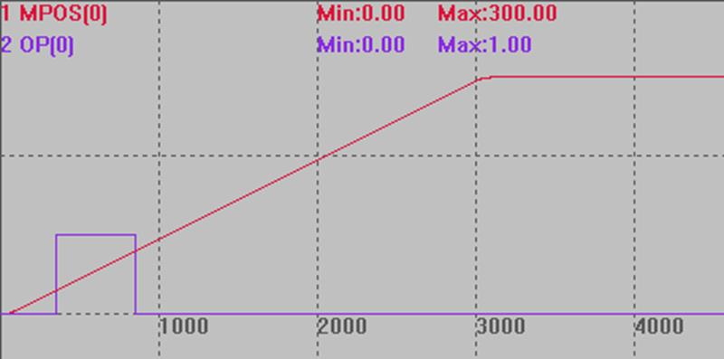 可以看出信号操作直接从例一的位置120处开始，只比较了后面两个点，矢量比较模式就是将MPOS(当前位置)+VECTOR_MOVED(之前的位移)与设置位置进行比较。
例三 mode=3，多轴矢量比较模式，XY加工模式的PSO应用 RAPIDSTOP(2) WAIT IDLE(0) WAIT IDLE(1) BASE(0,1) ATYPE=1,1 SPEED=100,100 ACCEL=1000,1000 DECEL=1000,1000 SRAMP=100,100 DPOS=0,0 MPOS=0,0 OP(0,OFF) TABLE(0,50,100,150,200) '比较点坐标设置 VECTOR_MOVED=0 '设置矢量起始位置 HW_PSWITCH2(2) '停止并删除没有完成的比较点 HW_PSWITCH2(3, 0, 1, 0, 3) '比较4个点，操作输出口0 TRIGGER '触发示波器 MOVE(300,400) END
比较输出图：按XY轴合成插补的矢量位置比较 VECTOR_MOVED(0)垂直刻度200 OP(0)垂直刻度2 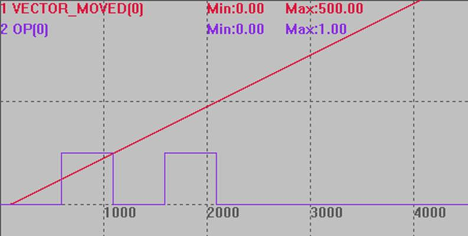
例四 mode=4，单点矢量比较 BASE(0) DPOS=0 MPOS=0 OP(0,OFF) VECTOR_MOVED(0) = 0 '设置当前的矢量位置 HW_PSWITCH2(2) '停止并删除没有完成的比较点 HW_PSWITCH2(4, 0, 1, 100) '启动比较输出，模式4，输出口0，第一个比较点输出ON，从矢量位置100开始比较，仅比较1次就结束 TRIGGER '触发示波器抓图 MOVEABS(200)
比较输出图 MPOS(0)垂直刻度100 OP(0)垂直刻度2 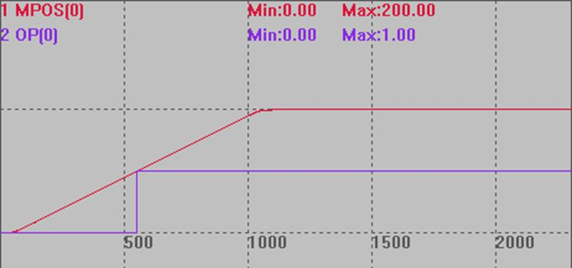
例五 mode=5，周期矢量比较模式，距离复位 BASE(0) DPOS=0 MPOS=0 OP(0,OFF) VECTOR_MOVED=0 '设置矢量起始位置为0，方便观察 HW_PSWITCH2(2) '停止并删除没有完成的比较点 HW_PSWITCH2(5,0,1,100,3,150,50) '位置100开始比较，比较3次，周期距离150，输出有效距离50 TRIGGER '触发示波器 MOVE(500)
比较输出图 位置100开始比较，比较3次，一个和周期距离150，前50输出有效状态，后100输出无效状态。 MPOS(0)垂直刻度200 OP(0)垂直刻度2 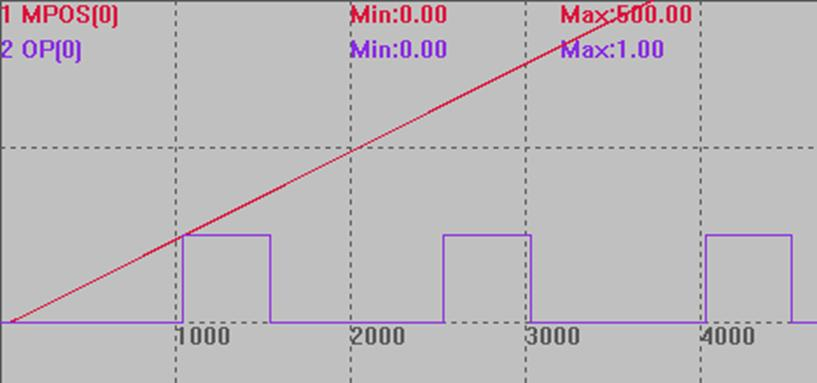
例六 mode=6，单轴周期矢量模式，时间复位 BASE(0) DPOS=0 MPOS=0 OP(0,OFF) VECTOR_MOVED=0 '设置矢量起始位置为0，方便观察 HW_PSWITCH2(2) '停止并删除没有完成的比较点 HW_PSWITCH2(6,0,1,100,4,100) '位置100开始比较，比较4次周期距离100，输出有效时间由HW_TIMER指令确定 HW_TIMER(2,100000,50000,1,off,0) '输出变为on后50ms变为off TRIGGER MOVE(500)
比较输出图 位置100时开始比较，比较4次，输出有效信号后50ms反转。 VECTOR_MOVED(0)垂直刻度200 OP(0)垂直刻度2 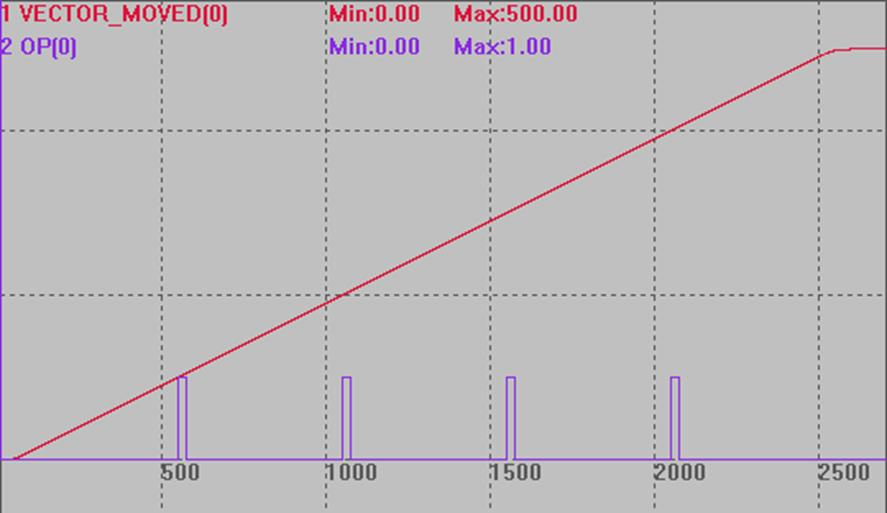
例七 mode=6，多轴周期矢量模式，时间复位 BASE(0,1) DPOS=0,0 MPOS=0,0 OP(0,OFF) TABLE(0,50,100,150,200) '比较点坐标设置 VECTOR_MOVED=0 '设置矢量起始位置为0，方便观察 HW_PSWITCH2(2) '停止并删除没有完成的比较点 HW_PSWITCH2(6,0,1,100,4,100) '位置100开始比较，比较4次周期距离100，输出有效时间由HW_TIMER指令确定 HW_TIMER(2,100000,50000,1,off,0) '输出变为on后50ms变为off TRIGGER MOVE(300,400)
比较输出图 坐标均为两轴的合成矢量位置，位置100时开始比较，比较4次，输出有效信号后50ms反转。 VECTOR_MOVED(0) 垂直刻度200 OP(0)垂直刻度2 MPOS(0)垂直刻度200 MPOS(1)垂直刻度200 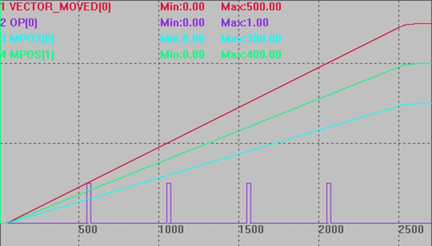
例八 mode=7 BASE(0) DPOS=0 MPOS=0 OP(0,OFF) TABLE(0,50,100,150,200,250,300,350,400,450,500,550,600,650,700) '比较点坐标设置 VECTOR_MOVED=0 '设置矢量起始位置为0，方便观察 HW_PSWITCH2(2) '停止并删除没有完成的比较点 HW_TIMER(0, 1000000, 500000, 2, OFF, 0) '模式0停止硬件定时器 HW_TIMER(2,100000,50000,1,off,0) '输出变为on后，硬件定时器触发开始计时，50ms后切换为off HW_PSWITCH2(7,0,1,0,13) '位置从table(0)开始比较，比较14个点，操作输出口0 TRIGGER '触发示波器 MOVE(1000)
比较输出图 坐标均为两轴的合成矢量位置，位置从table(0)开始比较，比较14个点，输出有效信号后50ms反转。 VECTOR_MOVED(0)垂直刻度200 OUT(0)垂直刻度1 MPOS(0)垂直刻度100 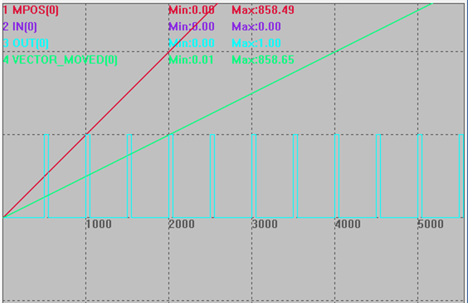
例九 mode=7 BASE(0) DPOS=0 MPOS=0 OP(0,OFF) TABLE(0,50,100,150,200,250,300,350,400,450,500,550,600,650,700) '比较点坐标设置 VECTOR_MOVED=0 '设置矢量起始位置为0，方便观察 HW_PSWITCH2(2) '停止并删除没有完成的比较点 HW_TIMER(0, 1000000, 500000, 2, OFF, 0) '模式0停止硬件定时器 HW_TIMER(2,100000,50000,1,off,0) '输出变为on后，硬件定时器触发开始计时，50ms后切换为off HW_PSWITCH2(7,0,1,0,13,100000,2,200000) '比较14个点，操作输出口0，动态调整硬件定时器有效时间为100ms和周期时间200ms、重复次数为2 TRIGGER '触发示波器 MOVE(1000)
比较输出图 坐标均为两轴的合成矢量位置，位置从table(0)开始比较，比较14个点，输出有效信号后50ms反转。 VECTOR_MOVED(0)垂直刻度200 OUT(0)垂直刻度1 MPOS(0)垂直刻度100 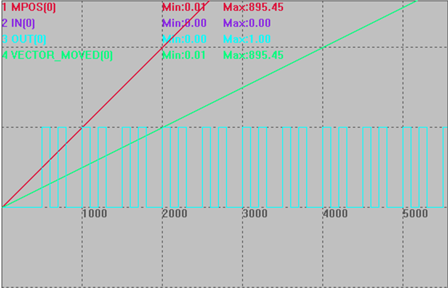
例十 mode=25，二维硬件位置比较输出 BASE(0,1) '选择XY轴 UNITS=1000,1000 SPEED=100,100 ACCEL=10000,10000 DECEL=10000,10000
'将当前位置设置为0点 DPOS=0,0 MPOS=0,0
'提前写入位置比较点XY坐标到table 10~49中 TABLE(10, 10,0,12,0, 20,0,22,0, 30,0,32,0, 40,0,42,0, 50,0,52,0, 52,10,52,12, 52,20,52,22, 52,30,52,32, 52,40,52,42, 52,50,52,52) GLOBAL pointNum '比较点数 pointNum=20
GLOBAL startX,startY '起点 startX=0 startY=0
GLOBAL midX,midY '中点 midX=52 midY=0
GLOBAL endX,endY '终点 endX=52 endY=52
WHILE 1 IF TABLE(0)=1 THEN '比较脉冲位置,非精准输出 WAIT IDLE ?"比较脉冲位置,非精准输出" '设置参数 SYSTEM_ZSET=1 AXIS_ZSET=1,1
ELSEIF TABLE(0)=2 THEN '比较脉冲位置,精准输出 WAIT IDLE ?"比较脉冲位置,精准输出" '设置参数 SYSTEM_ZSET=3 AXIS_ZSET=3,3
ELSEIF TABLE(0)=3 THEN '比较编码器位置,非精准输出 WAIT IDLE ?"比较编码器位置,非精准输出" '设置参数 SYSTEM_ZSET=17 AXIS_ZSET=17,17
ELSEIF TABLE(0)=4 THEN '比较编码器位置,精准输出 WAIT IDLE ?"比较编码器位置,精准输出" '设置参数 SYSTEM_ZSET=19 AXIS_ZSET=19,19 ENDIF
IF TABLE(0)<>0 AND IDLE(0)=-1 THEN TABLE(0)=0 ?"启动"
HW_PSWITCH2(2) '先清除所有的比较 HW_PSWITCH2(25,0,1,10,pointNum,10) '写入比较，操作输出口0
WA 10 TRIGGER '启动示波器
MOVEABS(startX,startY) '开始运动 MOVEABS(midX,midY) MOVEABS(endX,endY) ENDIF WEND END
比较输出图 DPOS(0)垂直刻度50 DPOS(1)垂直刻度50 OP(0)垂直刻度5 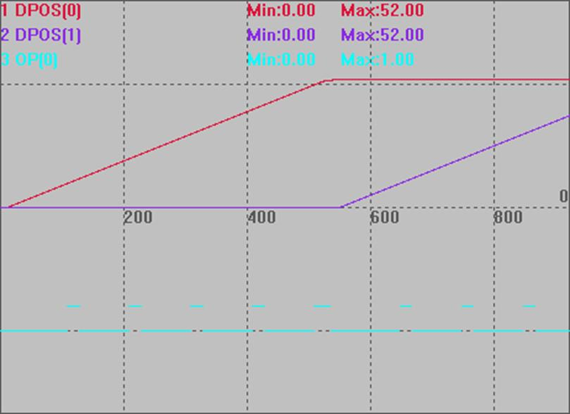
例十一 mode=35，三维硬件位置比较输出 BASE(0,1,2) DPOS=0,0,0 '将当前位置设置为0 MPOS=0,0,0 OP(0,OFF) TABLE(0, 20,20,20, 40,40,40, 70,70,70, 100,100,100, 140,140,140, 180,180,180) HW_PSWITCH2(2) '停止并删除没有完成的比较点 HW_PSWITCH2(35, 0, 1, 10, 6, 0) '启动比较输出，模式35，输出口0，第一个比较点输出ON，脉冲偏差10，table地址0-18，6个坐标 TRIGGER '触发示波器抓图 MOVEABS(200,200,200) '走直线
比较输出图 MPOS(0)垂直刻度200 MPOS(1)垂直刻度200 MPOS(2)垂直刻度200 OP(0)垂直刻度2 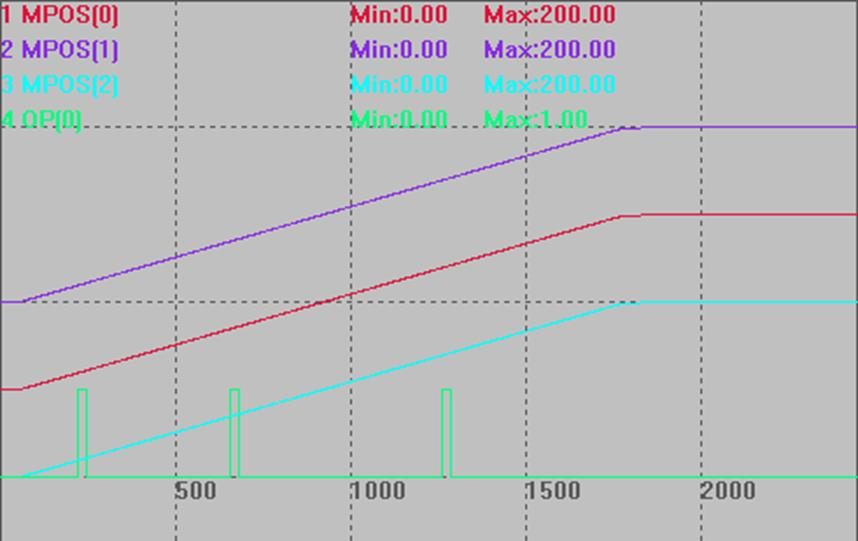 |
|
相关指令 |